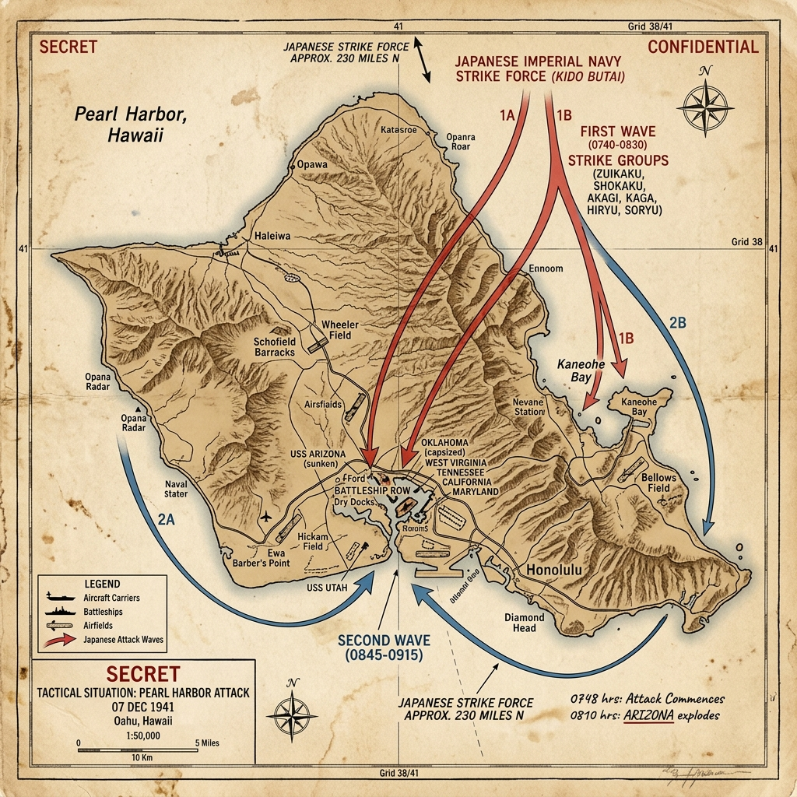

Strategic Context & Geopolitical Buildup
Tensions between the United States and the Empire of Japan had been mounting for decades over control of East Asia and the Pacific. Following Japan's invasion of China in 1937 and its subsequent occupation of French Indochina in 1940, the United States, along with Great Britain and the Netherlands, imposed a total embargo on oil and scrap metal exports to Japan. This oil embargo threatened to paralyze the Japanese war machine and economy within two years, as Japan imported over 80% of its oil from the US.
Faced with the choice of yielding to American demands to withdraw from China and Indochina, or seizing the resource-rich European colonies in Southeast Asia, the Japanese military leadership chose war. Admiral Isoroku Yamamoto, commander of the Combined Fleet, conceived a surprise strike on the US Pacific Fleet at Pearl Harbor. The goal was to destroy the American battleships and carriers, preventing them from interfering with Japan's planned expansion into the Dutch East Indies and Malaya.
Military Doctrines & War Plans
The Japanese plan relied on total surprise and the concentration of carrier-based aviation. Six fleet carriers (the Kido Butai) under Vice Admiral Chūichi Nagumo were to sail in secret across the North Pacific, maintaining strict radio silence. The air crews had trained for months, developing specialized shallow-water torpedoes equipped with wooden fins to prevent them from sinking into the mud of Pearl Harbor.
The US military, conversely, was unprepared for an air attack. Intelligence believed that any Japanese strike would target the Philippines or Malaya. General Walter Short, commander of army defenses in Hawaii, feared sabotage and ordered all aircraft to be parked wingtip-to-wingtip on the runways to make them easier to guard, which unintentionally made them perfect targets for bombers.
Weapons, Technology, and Logistics
The Japanese strike force deployed the Mitsubishi A6M Zero fighter, the Nakajima B5N 'Kate' torpedo bomber, and the Aichi D3A 'Val' dive-bomber. The Zero was highly agile, outclassing any American fighter in Hawaii, while the Kate was highly effective when carrying shallow-water torpedoes or heavy armor-piercing bombs made from converted battleship shells.
The US defenses possessed SCR-270 radar stations. On the morning of the attack, two operators at the Opana Radar Site detected a large echo. However, the information center officer assumed it was a scheduled flight of American B-17 bombers from California and told the operators not to worry.
Opening Moves & Initial Clash
The Kido Butai reached its launching point 230 miles north of Oahu at dawn on December 7, 1941. At 6:00 AM, the first wave of 183 aircraft took off, led by Commander Mitsuo Fuchida. Simultaneously, Japanese midget submarines attempted to infiltrate the harbor; one was detected and sunk by the destroyer USS Ward, which fired the first American shots of the war.
At 7:49 AM, Fuchida looked down at the peaceful base and radioed the code 'Tora! Tora! Tora!' (Tiger! Tiger! Tiger!), signaling that complete surprise had been achieved. Moments later, the first bombs began to fall on the airfields at Wheeler, Hickam, and Kaneohe, destroying dozens of parked American aircraft before they could take off.
The Battle: Two Waves of Terror
The attack unfolded in two waves. The first wave targeted 'Battleship Row' along Ford Island. The USS Arizona was struck by an armor-piercing bomb that penetrated its forward magazine, causing a massive explosion that sank the ship and killed 1,177 crewmen. The USS Oklahoma was hit by multiple torpedoes, capsizing and trapping hundreds of men inside.
The second wave of 170 aircraft arrived at 8:54 AM, targeting dry docks and other ships. American soldiers and sailors fought back bravely with anti-aircraft guns, machine guns, and rifles. A few US fighters, notably flown by Lieutenants George Welch and Kenneth Taylor, managed to take off and shot down several Japanese planes, but the damage was already done.
After the Two Waves: Fuel, Yards, and a Disputed Counterfactual
By about 10:00 AM, the second wave was withdrawing and Japanese aircraft were recovering aboard the carriers of the Kido Butai. Vice Admiral Chūichi Nagumo then retired westward rather than mounting further strikes. The original operational plan called for two attack waves; it did not schedule a formal third wave against fuel farms, repair yards, or dry docks.
Later popular accounts—especially those associated with Mitsuo Fuchida—claim junior officers urgently demanded a third strike on oil tanks and repair facilities and that Nagumo refused after a heated argument. Modern naval historians (including work associated with Jonathan Parshall and others) treat that dramatic bridge confrontation as unreliable: contemporary evidence is thin, Minoru Genda disputed key elements of Fuchida's later storytelling, and logistics, fuel, aircraft losses, and unknown US carrier locations already argued for withdrawal. What is not in dispute is the counterfactual importance of the targets left intact: surviving fuel storage, machine shops, submarine facilities, and dry docks allowed Pearl Harbor to remain a functioning forward base rather than forcing a prolonged US withdrawal to the West Coast.
Pivot Points & Key Tactical Decisions
The most critical factor was the absence of the US carriers USS Enterprise, USS Lexington, and USS Saratoga. These ships escaped damage, preserving the core offensive power of the Pacific Fleet and allowing Nimitz to fight the carrier battles of Coral Sea and Midway in 1942.
Another factor was the failure of the Japanese to issue a formal declaration of war before the attack. The message from Tokyo was delayed by translation issues, and was delivered to Secretary of State Cordell Hull after the bombs had already fallen. This delay enraged the American public, uniting them in a state of absolute resolve.
The Soldier's Ordeal & Civilian Impact
For the men at Pearl Harbor, the morning was a chaotic nightmare of explosions, burning oil, and black smoke. Sailors jumped into water covered in burning fuel to escape their sinking ships. Medics worked under fire to treat horrific burn injuries. The heroism of individuals like Doris Miller, a Mess Attendant who manned an anti-aircraft gun on the USS West Virginia and received the Navy Cross, became a symbol of national unity.
Civilians in Honolulu were caught in the crossfire. Scattered anti-aircraft shells fell in residential areas, killing 68 civilians. The US government immediately declared martial law in Hawaii, suspending civil liberties, imposing blackouts, and placing the entire territory under military control, which lasted for the duration of the war.
The Aftermath & Immediate Consequences
On December 8, 1941, President Roosevelt addressed a joint session of Congress, calling December 7 'a date which will live in infamy' and requesting a declaration of war against Japan, which was approved with only one dissenting vote. On December 11, Adolf Hitler and Benito Mussolini declared war on the United States, officially bringing America into the European conflict.
The attack succeeded in temporarily neutralizing the US battleship fleet, but it failed to achieve Japan's goal of breaking American resolve. Instead, it galvanized the industrial, economic, and military power of the United States, transitioning it into the 'Arsenal of Democracy' and sealing the fate of the Axis powers.
Historical Legacy & Long-term Impact
Pearl Harbor remains a symbol of military surprise, intelligence failure, and national resilience. It led to the decline of the battleship and the rise of the aircraft carrier as the primary weapon of naval warfare.
The attack also led to the forced internment of over 110,000 Japanese-Americans living on the West Coast under Executive Order 9066, a decision later recognized as a major violation of civil liberties and fueled by racial prejudice and wartime hysteria.
The Axis Perspective
In Tokyo, Pearl Harbor was justified as escape from economic strangulation. The US-British-Dutch oil embargo after the move into French Indochina threatened to paralyze the Japanese war machine within months. Hardliners framed the choice as national extinction or a southern resource war—and insisted that the US Pacific Fleet had to be neutralized first.
The raid's tactical success produced public euphoria and a dangerous myth of spiritual superiority over a supposedly soft America. Celebrations in Japan treated the attack as vindication of years of militarist ideology. That mood made it harder for more cautious voices to rein in subsequent overextension across the Pacific.
Admiral Isoroku Yamamoto, architect of the strike, did not share the euphoria. Having lived and studied in the United States, he understood American industrial depth. Before the war he warned Prime Minister Konoe in substance: "In the first six to twelve months of a war with the United States and Great Britain I will run wild and win victory upon victory. But then, if the war continues after that, I have no expectation of success."
From the Japanese operational view, the attack also left unfinished business: the US carriers were absent, and fuel tanks, repair yards, and submarine facilities largely survived. What looked in Tokyo like a decisive opening blow looked in hindsight like a brilliant raid that failed its strategic purpose—awakening, rather than crippling, American power.
Tactical Map & Theater of Operations
A map illustrating the tactical vectors of the Japanese Imperial Navy's surprise strike waves over Oahu:

Figure: Pearl Harbor Attack, December 7, 1941: Displaying the Japanese strike routes over Oahu and the target battleships anchored at Battleship Row.
Unusual and Little-Known Facts
The 'date which will live in infamy' is so iconic that smaller, sharper facts often get crowded out—warnings ignored, first shots fired before the planes arrived, and strange aftershocks far from Battleship Row.
The first American shots of the Pacific war were fired before the air raid began. Shortly after 6:30 AM, the destroyer USS Ward attacked and sank a Japanese midget submarine near the harbor entrance. The report struggled to climb the chain of command in time; confirmation that Ward had truly sunk a sub came only decades later when the wreck was found.
Opana Point radar operators saw the incoming strike and were told not to worry. Privates Joseph Lockard and George Elliott tracked a large formation approaching Oahu; the duty officer assumed it was an expected flight of B-17 bombers from the mainland. The radar plot was one of history's most famous missed warnings.
Aircraft were parked wingtip-to-wingtip against sabotage, not air attack. Local commanders expected Japanese agents or subversion more than a carrier raid from the north Pacific, so planes were clustered for easy guarding—making them ideal targets when the dive-bombers arrived.
The attack produced the first Japanese prisoner of war held by the United States: Kazuo Sakamaki, an officer from a midget submarine who washed ashore and was captured. Separately, the Niihau incident saw a downed Japanese pilot attempt to rally support on the lightly populated island of Niihau—a brief, violent drama far from Pearl Harbor itself.
The USS Arizona still leaks fuel oil more than eighty years later. Visitors to the memorial can sometimes see the 'black tears' rising from the wreck, where more than 1,100 sailors and Marines remain entombed—turning a battleship into both grave and living reminder.
These details do not replace the main operational story—but they are often the ones that stick, because they reveal contingency, myth-making, and human texture beneath the familiar headlines.
Archives, Primary Sources & Further Reading
For original documents, logs, and research files on Pearl Harbor:
- National Park Service — WWII Valor in the Pacific (Pearl Harbor) Official site for the Pearl Harbor National Memorial, USS Arizona Memorial, and interpretive materials.
- National WWII Museum — Remembering Pearl Harbor Museum overview of the attack, US casualties, and the road to American entry into the war.
- Library of Congress — World War II documents Primary documents and collections related to the US entry into World War II.